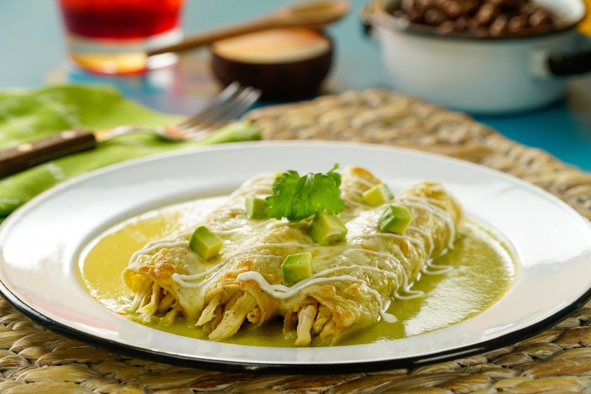

Ingredientes
- 1 pechuga de Pollo cocida y deshebrada
- 1/2 kg Tomate verde
- 1/4 Cebolla
- 3 dientes Ajos
- 3 Chile Jalapeño verdes
- 1 taza Cilantro
- 1/2 taza Caldo de pollo
- 1 taza Crema
- 8 rebandas Queso Manchego
- 1/2 kg Tortilla de Maíz
- 2 tazas Aceite
- Sal al gusto
- Pimienta al gusto
- 1 taza Crema
- 1/2 Cebolla en juliana
Procedimiento
- HIERVE los tomates y chiles. Licúa con la cebolla, ajo, cilantro y caldo de pollo.
- VIERTE la crema sin dejar de licuar.
- SOFRÍE la salsa y salpimienta. Cocina hasta que espese ligeramente. Reserva.
- FRÍE las tortillas. Coloca al centro de cada tortilla el pollo cocido y una cucharada
- ENVUELVE formando un rollito. Acomoda en un refractario, baña con la salsa.
- ACOMODA las rebanadas de queso manchego.
- BAÑA con la salsa. Cubre con el queso y tapa con papel aluminio. Hornea por 15 minutos.
- SIRVE y acompaña con más salsa, crema y cebolla.